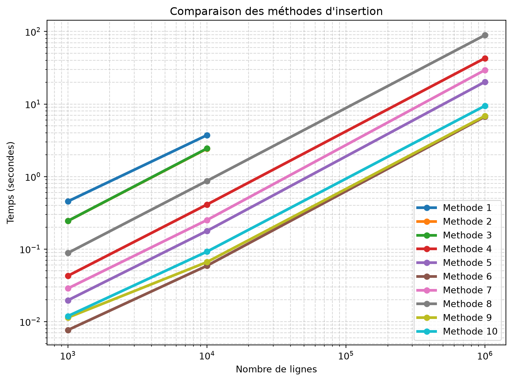

Mission Semaine 4
Comparaison des méthode d’insertion et de copie en Python
Dans ce brief de la semaine 4, l’objectif est d’explorer les differentes methodes de copies et d’insertion dans une base de donées postgre. Afin de voir la variation du temps d’excution en fonction du changement de certains parametres tel que le nombre de lignes importées ou le changement de la taille des buffer dans certaines méthodes.
Les outils
Outils et IDE :
Visual Studio Code
Jupyter
Python
environnement virtuel
Librairies :
Faker => pour la génération de données
pandas => pour la manipulations des dataframes
time => pour les chronometres et mesure de temps
psycopg2 => pour se connecter à une base de données postgres et la manipuler
io => pour utiliser l’objet stringIo pour la copie
sqlalchemy => connexion avec une base de données postegres via l’objet engine
csv => pour créer manipuler des csv avec des dataframe
Protocle de test
Les méthodes ont été testées avec un jeu de de donnée de :
- 1000 lignes
- 10 000 lignes
- 1 000 000 lignesPour les jeux de données de 1000 lignes les methodes ont été executées 30 fois.
Pour les jeux de données de plus de 1000 lignes les méthodes ont été executées 10 fois.
Une médiane est ensuite calculée sur l’ensemble des resultats par méthode et par nombre de lignes.
Ce qui en résulte le tableau ci-dessous.
Tableau des comparaisons de la médiane des temps execution des methodes en fonction du nombres de lignes
| # | Méthode | 1000 lignes | 10 0000 lignes | 1 000 000 lignes |
|---|---|---|---|---|
| 1 | cursor.execute() dans une boucle for, un commit() par ligne |
0.45396925000386545 | 3.716525799994997 | N/A |
| 2 | cursor.execute() dans une boucle for, un seul commit() à la fin |
0.24382924999372335 | 2.4195678499963833 | N/A |
| 3 | cursor.executemany() |
0.24412589999701595 | 2.4362337499987916 | N/A |
| 4 | psycopg2.extras.execute_batch() (jouez sur page_size) |
0.04272405000665458 | 0.410662449998199 | 42.87709904999792 |
| 5 | psycopg2.extras.execute_values() (jouez sur page_size) |
0.019655150004837196 | 0.177762299994356 | 20.20878009999433 |
| 6 | COPY via cursor.copy_expert() + StringIO |
0.00764204999723006 | 0.0587949000109802 | 6.689683550001064 |
| 7 | pandas.to_sql() par défaut |
0.028642450000916142 | 0.250993900008325 | 29.42560014999617 |
| 8 | pandas.to_sql(method='multi', chunksize=...) |
0.08824270000332035 | 0.8696305500052404 | 89.18170919999102 |
| 9 | pandas.to_sql(method=callable) branché sur COPY |
0.011352850000548642 | 0.06612305000453489 | 6.855719049999607 |
| 10 | COPY via un itérateur (sans tout charger en mémoire) |
0.011899249999260064 | 0.09206384999561124 | 9.451808800004073 |
Graphique des comparaisons de méthodes
Analyse des temps et du graphique
Commençons par analyser la performances.
On remarque que les deux méthodes cursor.execute():3.71s/2.41s, ainsi que executemany():2.43s sont particulièrement lents.
De rapidité croissantes, viennent ensuite pandas.to_sql(chunksize):0.86s, execute_batch():0.41s,pandas.to_sql():0.25s et execute_values():0.17s . Je n’ai pas trouvé d’explication pour la contre-performance de panda.tosql(chunksize), dont les fonctionnement est censé être très similaire à panda.tosql()
Enfin, cursor.copy_expert():0.058s , pandas.to_sql():0.066s branché sur copy et copy_via_itérateur:0.092s sont de vitesse comparable et largement plus rapide que le reste. On remarque que copy_via_itérateur prend 50% plus de temps que les deux autres méthodes, étonnement.
Il ya plusieurs raisons pour ces différences de performances.
Tout d’abord, grouper les requêtes est préférable, afin de pouvoir exécuter un grande nombre d’instruction d’un même type d’un coup et de ne pas avoir à exécuter les préparatif pour chaque ligne insérée; c’est également pourquoi ne faire qu’un seul commit est préférable.
cursor.execute() et executemany() insèrent chaque ligne individuellement, ce qui explique donc leur lenteur.
execute_batch est meilleur car il regroupe les lignes en groupes, mais reste inférieur à execute_values qui ne crée qu’un seul groupe de ligne.
A contrario, l’instruction copy est extrêmement efficace car elle exécute directement du sql en insérant directement le flux de donnant et ignorant l’étape interprétation et vérification.
Quelles méthodes utiliser?
La méthode la plus simple et ayant de bons rendements est execute_values. Mais pour de grande insertions, il faut mieux utiliser copy_expert(), voir dataframe.to_sql branché sur copy si vous avez déja codé la méthode de copie et la classe itérateur précédemment.